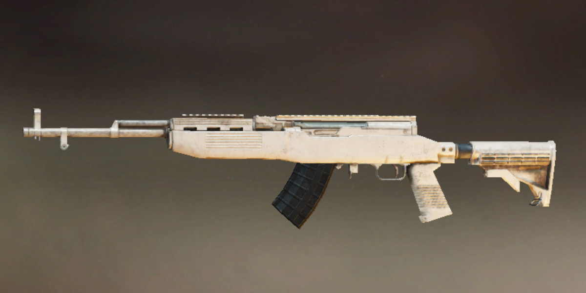
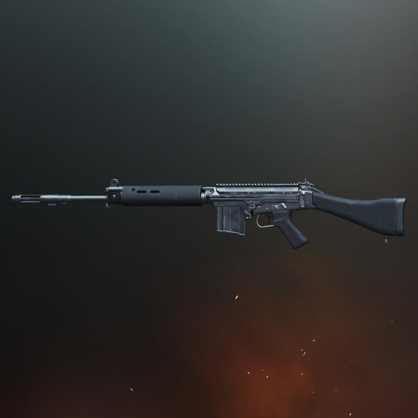
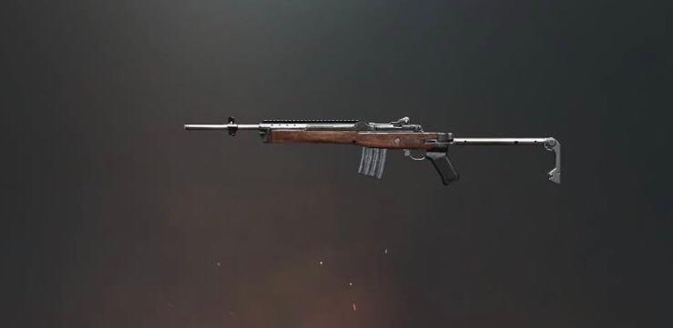
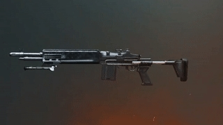
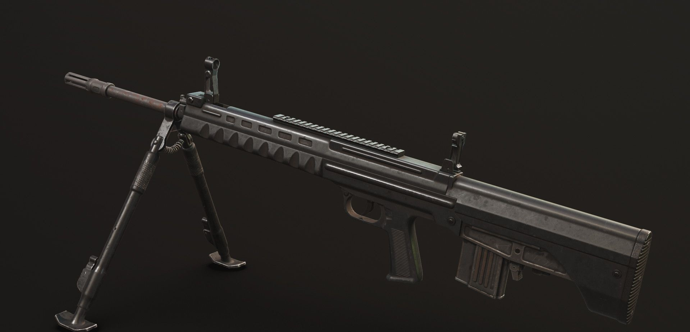
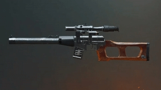

Snipers
SKS:
 Base Damage : 56Magazine Capacity: 10
Bullet Speed : 800 m/s
The SKS (Samozaryadny Karabin sistemy Simonova) is a designated marksman rifle, being a middle ground between a typical assault rifle and a sniper rifle. Thus, this rifle excels in medium-range combat and packs devastating stopping power if a user can handle this gun effectively in CQC (close-quarter combat), but will be less effective in long- to extreme-combat as it lacks the precision of dedicated sniper rifles.
SLR:
 Base Damage : 58Magazine Capacity: 10
Bullet Speed : 840 m/s
The SLR can be seen as a more powerful version of the SKS, dealing more damage at the expense of more recoil. Unlike the SKS however, it lacks an attachment point for any foregrips, requiring the user to have good recoil control and steady hands.
Mini14:
 Base Damage : 53Magazine Capacity: 20
Bullet Speed : 990 m/s
A lightweight rifle classified as a designated marksman rifle in terms of attachments, compared to other weapons in its class, the Mini-14 deals less damage and only has attachments for muzzle, magazine and sight mods, making up for these shortcomings with a very high muzzle velocity - the highest of any weapon in the game - and low bullet drop, as well as a larger magazine capacity, making it suitable for situations where quick follow up shots are required at long range, as well as close quarters combat when the trigger just needs to be pulled as fast as possible, hoping that the enemy is the first to go down.
MK14:
 Base Damage : 61Magazine Capacity: 10
Bullet Speed : 853 m/s
The Mk14 can be seen as a bigger version of the SKS - dealing more damage per shot and with more recoil as well. The most notable difference from the SKS is the ability of the Mk14 to switch to an automatic fire mode, enabling its wielder to deliver a huge amount of damage for different situations, whether it be house-clearing or surprise contact with another player.
QBU:
 Base Damage : 53Magazine Capacity: 20
Bullet Speed : 945 m/s
The QBU is a Chinese bullpup designated marksman that fits the theme/location of the Sanhok. The rifle features a bipod that deploys upon proning. When deployed, the bipod significantly reduces the recoil when shooting.
VSS:
 Base Damage : 40Magazine Capacity: 10
Bullet Speed : 330 m/s
The VSS Vintorez is a rarely spawning weapon shooting common 9mm ammo in both single and fully automatic firing modes. It deals very low damage compared to other sniper rifles, but because of the integrated suppressor, muzzle report is significantly reduced, while the subsonic ammo causes its bullets to make a quiet whizzing noise rather than a supersonic crack, making it extremely difficult to locate the shooter.